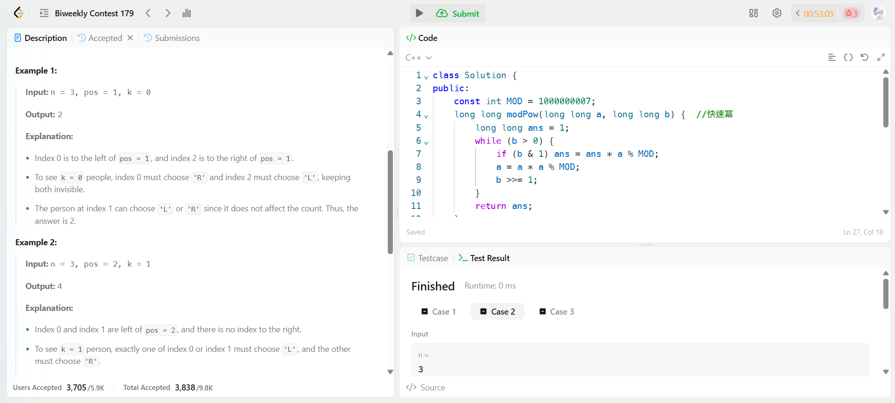

Biweekly Contest 179
今天比賽一開始狀態很好，但做到第二題真的很搞心態，知道答案跟組合數有關，但沒注意到組合數除法不能直接 mod，所以去查之後才知道要用模逆元來做，也是在比賽中現學了一個方法，但也是吃了一堆加時……

我就直接先做第三題了，因為第三題比較簡單，直接 DP 就好了。
今天比賽一開始狀態很好，但做到第二題真的很搞心態，知道答案跟組合數有關，但沒注意到組合數除法不能直接 mod，所以去查之後才知道要用模逆元來做，也是在比賽中現學了一個方法，但也是吃了一堆加時……

我就直接先做第三題了，因為第三題比較簡單，直接 DP 就好了。